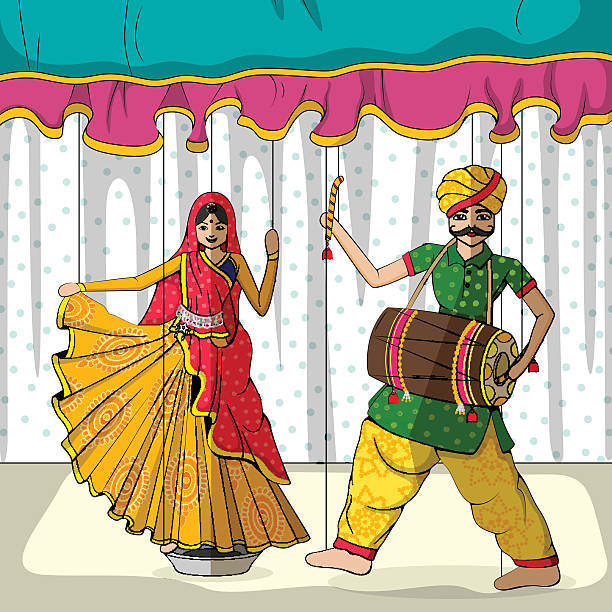

Kathputli is a form of traditional string puppetry of Rajasthan, where wooden dolls dressed in colourful costumes are animated with strings to narrate stories of kings, warriors, folklore and moral tales. Regions: It originated and is mainly practiced in Rajasthan, especially in Jaipur, Nagaur, Churu and Sikar, with Kathputli Nagar in Jaipur being its largest living hub.
 kathputi is a traditional dance